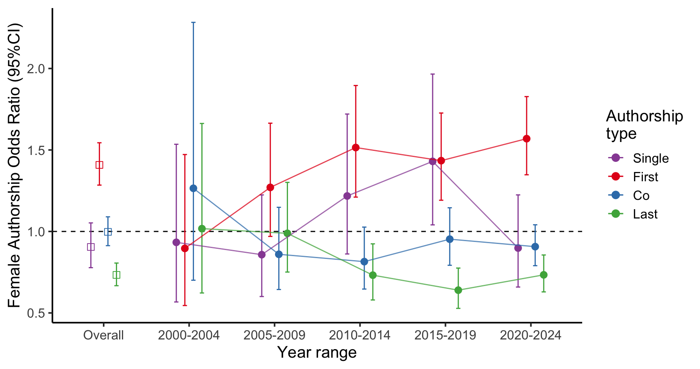
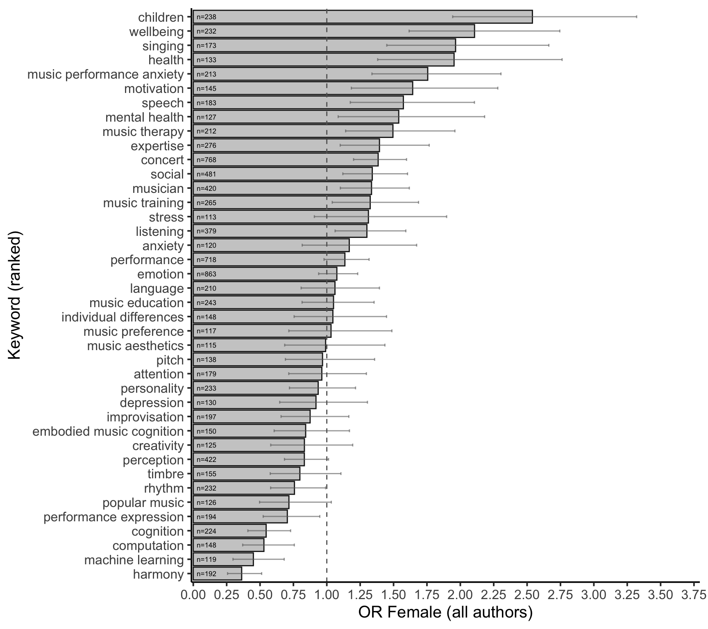

Gender Distribution of Authors in Music Psychology
Abstract
Academia suffers from issues regarding equity, with one crucial aspect being academic authorship. Many studies have shown that there is a gender gap in publishing, where women are often underrepresented. As there are differences across disciplines, the goal of this study is to provide a current overview the gender distribution of authors within music psychology. A total of 3,373 papers published between 2000 and 2025 across five journals were analyzed with respect to author gender and authorship role (first, last, solo, coauthor). In addition, patterns related to citations, open-access publishing, and keywords were explored across gender. Overall, female authors were in the minority, accounting for 40.2% of all authors. However, the distribution of authorship roles diverged notably from this overall proportion: women were more likely to be first authors (OR = 1.41), equally likely to be solo authors (odds ratio, OR = 1.11) or coauthors (OR = 1.00), but less likely to be last authors (OR = 0.73). These patterns have become more pronounced over the past 15 years. No substantial gender differences in citation counts were observed. Analyses of geographical variation revealed clear cross-country differences, potentially reflecting both the status of women and the historical development of the discipline in particular regions. Finally, an examination of keywords suggested broad thematic preferences differing by gender. While overall some of this work shows that the field of music psychology is more balanced than some other field, especially in more STEM disciplines, providing such a picture hopefully inspires discussions and initiatives to promote fairness and more equity in academia.
Keywords
gender, transparency, music psychology, open science, meta-research
Introduction
In recent years, meta-scientific attention has increasingly turned toward music psychology, with a focus on how WEIRD (Jakubowski et al., 2025) and transparent (Eerola, 2024) the discipline is. In this study, we examine gender equality in authorship as an indicator of how equitably gender is represented within the field. Disparities in gender distribution may signal structural barriers and disciplinary cultures that constrain the diversity of contributors and hinder optimal knowledge production (Ni et al., 2021). Authorship visibility is also critical for academic career progression, influencing recognition, funding, and advancement opportunities. Establishing a clear understanding of gender representation in music psychology is therefore essential for supporting a more inclusive and sustainable academic community. Previous studies across various disciplines—including psychology—have consistently revealed persistent gender inequalities in authorship, though the extent of these disparities varies by field (González-Alvarez & Sos-Peña, 2020; Rock et al., 2021; Shah et al., 2021; Son & Bell, 2022).
Academia suffers from issues regarding equity. A lack equity impacts productivity, innovation, and job satisfaction in the workplace, which hugely impact academic progress. One aspect of this inequity is that gender. Women are more at a disadvantage than men, with evidence suggesting that women are less present in positions of power. For instance, in the UK in 2016-17, 24.6% of professors are women (Bhopal & Henderson, 2021) when compared to the 44% of all grades in the UK academia (Harris et al., 2025). A similar situation holds for italy (24% female professors) (Filandri & Pasqua, 2021), and to some extent for the US (14%) (Spoon et al., 2023). A pay gap between men and women in academia is also significant, (e.g., female-male wage ratio is 0.85 in 2020 in the UK) (Quadlin et al., 2023). In a “publish or perish” culture of science and academia (Kiai, 2019), one crucial aspect to focus on is authorship. The number and quality (e.g., journal reputation) of authorships an individual determines crucial career development such as grant funding and future (permanent) positions.
Research across several scientific disciplines that show that women tend to be less represented in authors compared to men (Banks et al., 2025; Son & Bell, 2022). Encouragingly, however, there is a general trend that the ratio of women to men in authorships is improving. From around 1960 to 2021, studies show a general improvement (González-Alvarez & Sos-Peña, 2020; Ioannidis et al., 2023; Jemielniak & Wilamowski, 2025). Yet there is evidence that this improvement is plateauing (Jemielniak & Wilamowski, 2025) and that although women are more likely to be first author, women are still generally unfairly underrepresented as the last author (González-Alvarez & Sos-Peña, 2020; Rock et al., 2021; Shah et al., 2021). There could be several reasons for such a disparity: despite efforts to give fair credit for author contributions (Ni et al., 2021), for example, using the Contributor Roles Taxonomy (CRediT) system, assigning authorship can be unclear. What counts as an authorship may also differ between academic disciplines. Women are more likely to experience authorship disagreements, for example, when to decide authorship - women prefer to discuss in earlier stages, while men choose authorship at the final stage (Ni et al., 2021). Another reason for the gender gap could also come from parenthood and parental leave, which account for about ~40% of gender gap in career advancement (Nielsen et al., 2024). Importantly, there are strides to improving this, with opinion papers discussing way to improve receipt and reporting of intellectual credit (Banks et al., 2025) as well as creating equitable environments in academic science (Martı́nez-Menéndez et al., 2024).
It is important to recognise that fields of scholarship and academic disciplines vary considerably in terms of gender distribution (Huang et al., 2020). For example, a large survey of authors by González-Alvarez & Sos-Peña (2020) showed that the hard sciences (N = 119,592) had the lowest prevalence of women (14.8%), whereas in the biological and social sciences (N = 262,122) the proportion was substantially higher (43.3%). In psychology, which is perhaps the closest benchmark for the present focus on music psychology, female authors accounted for 45.2% of the sample (N = 90,067).
To improve certain academic equity issues, it is worthwhile focusing on our discipline and to assess the equity in music psychology. The past efforts have already provided a snapshot a rough overview of the state of affairs (e.g., Anglada-Tort & Sanfilippo (2019)) with suggestions of future directions to improve the field. (Eerola, 2024) showcases how Open Science practices (e.g., preregistrations, sharing research materials, data, and analysis scripts) are relatively limited, and encourage authors in the field to start implementing such practices. Jakubowski et al. (2025) explores participant samples and musical stimuli used across a wide range of experiment to give an idea of how limited or generalizable the field is, which the view to see how – as a field – we need to diversify participant samples and stimuli to gain a more realistic understanding. In a similar way to these papers, the current paper aims to give a current overview of authorship and gender patterns in the field of music psychology.
Aims
Our aim is to find out what is the gender distribution in the specialist journals of music psychology. What is the proportion of different types of authorships (single, first, coauthors, and last authorships) for men and women in the published papers in the last 25 years? Are there specific trends in terms of countries of the affiliations, topics, or time?
Methods
Materials and analyses
We retrieved bibliographic information for all articles published between 2000 and June 2025 from five specialist journals, resulting in 3,373 unique articles: Musicae Scientiae (N = 639), Psychology of Music (N = 1,231), Music Perception (N = 675), Journal of New Music Research (N = 563), and Music & Science (N = 265). These journals have also been used in previous meta-science studies to characterise research practices in music psychology (Jakubowski et al., 2025). Author affiliations were extracted automatically and converted into country-level data. However, these were not manually verified for each entry, as affiliations are not always clearly matched to individual authors due to variations in reporting conventions, such as multiple or partial affiliations.
In total, the dataset included 9066 authors, of whom 5312 were unique. Author affiliations spanned 63 countries. We also extracted citation counts and Open Access status from Scopus. Information on joint first authorship was not available in the data.
Gender attribution was initially based on first names. We recognise that treating gender as a binary category is inherently problematic. Gender is a complex and multidimensional social construct. However, consistent with prior meta-science research on gender and authorship (González-Alvarez & Sos-Peña, 2020; Ni et al., 2021; Rock et al., 2021; Shah et al., 2021; Son & Bell, 2022; Wais, 2006), we adopt a binary classification—male and female—for analytical purposes and assume that first names allow for a reasonable, though imperfect, attribution of gender. We used the genderize API (Wais, 2006), which predicts gender from first names and can be supplemented with country information derived from author affiliations to improve accuracy. This method resolved the gender of 89.3% of authors with a probability greater than 0.90. Only 89 names had a low attribution probability (< 0.55). Unattributed cases were then checked manually, resulting in 185 manual corrections. After this process, 32 names remained ambiguous and 27 were unknown—some likely due to data entry errors in Scopus (e.g. only initials or surnames). These 59 cases were excluded from the dataset. It is likely that the due to challenge of attributing gender correctly not all the gender attributions are correct. Although genderize.io has been shown to achieve 96.6% accuracy in a diverse multinational test database without using a country of origin information – 98% with the information included – it also underperforms (82% accuracy) in Asian names (VanHelene et al., 2024). However, the error rates of these processes have been previously been shown to be non-biased, i.e. showing similar number of mistakes for both genders (Sebo, 2021; VanHelene et al., 2024).
We carried out manual corrections of the gender attributions where we were familiar with the author or the database had the full first name coded with initials, or the second name used as the first name. This led to 53 corrections.
We defined four types of authorship positions: single authorship, first authorship (which does not include papers with a single author), coauthorship, and last authorship. Coauthorship includes all positions other than first and last. These positions carry different academic prestige: first authorship is typically associated with the primary contributor, while last authorship is often held by senior researchers with established reputations (Tscharntke et al., 2007).
For the analyses, we analysed gender disparities in authorship by comparing the frequency of these authorship types between male and female authors. Our analysis focused on the female author proportion (FAP) and odds ratios (ORs) comparing the likelihood of occupying each authorship position by gender.
Results
Among all authors (N = 9066), 40.2% (N = 3647) were identified as female. To account for the unequal number of male and female authors across the dataset, we used odds ratios (ORs) to compare the relative likelihood of females occupying different authorship positions. We first investigate the authorship types across gender and then examine the author order and the overall number of coauthors in more detail.
Authorship positions
The overall OR for women as first authors was 1.41 [95% CI: 1.28–1.54], indicating that the odds of first authorship are 41% higher for females compared to the male authors (Fisher’s exact test p < .001). For coauthorship positions, the OR was 1.00 [0.91–1.09], suggesting no substantial gender difference (p = .96). In contrast, the odds ratio for women as last authors was 0.73 [0.67–0.81], indicating that the odds of last authorship are 27% lower for women compared to men and significantly different (p < .001). Being a single author has odds ratio of 0.90 [0.78-1.05] for females, which suggests that while women are represented with relatively more single authored papers than men, the difference is not significant (p = .21).
To illustrate the trends across time in the authorship positions across the gender, we looked at 5-year-windows of the authorship types across gender, shown in Figure 1. The overall numbers across the whole data are illustrated in the first column of the graph and the remaining five columns portray the chronology in 5-year windows. The higher odds for female authors at first author position seems to be established in 2010 onwards. Female first author position exhibits a positive 5-year growth rate of +11.1%. The coauthor positions for female authors are relative stable at the odds around 1, indicating relatively equal odds between female and male authors. However, the last author positions have become relatively more rare after 2010, showing statistically significantly lower odds ratios from 2010 onwards and negative 5-year growth rate (-9.5%). The odds ratio for female single authored papers hovers around 1.0, showing no meaningful trend across the time.
The variation of the number of authors across the papers is considerable. Here we have the maximum of 34 authors in a paper and a median of 2 (M=2.69, SD=1.77). Previous research has calculated the collaboration index across gender (González-Alvarez & Sos-Peña, 2020), suggesting that male author tend to have larger number of coauthors (M = 1.5) than female (M = 1.34) in psychology. Here the average author numbers for male and female authors (disregarding authorship positions) indicate similar difference, higher mean author numbers for males (M = 1.96, [1.91-2.01]) than for females (M = 1.71, [1.66-1.76]), t(4640.58) = 7.21, p < .001, Cohen’s d = -0.21, 95% CI [-0.26, -0.15]. This analysis, however, does not allow us to distinguish the authorship roles in the counts.
To illustrate how the actual number of authors in a paper impacts female first author likelihood, we calculated the odds ratios across the number of authors in paper, pooling the papers with 7 or more authors together (N=749, 8.3%). We added the single-authored papers to the plot to indicate the odds of being female to be single authors compared to all studies with multiple authors. The results are shown in Figure 2. We can observe that while female authors are not more likely to be single authors than men, they tend to be more likely to be first authors than males in papers with 2 or 3 authors; the odds ratios for first authorship position for female authors for papers with 2 authors is 1.55 [130-1.85], and for 3 authors the odds ratio is 1.61 [1.35-1.92], both significantly different from equal proportion. The last authorship positions for female authors are consequently lower, odds ratio of 0.65 [0.54–0.77] for 2 authors and 0.59 [0.49–0.71] for 3 authors, both also significant at p < .001 level. At four and five authors, the higher odds ratio for female is still evident (OR of 1.37 both both), but the last authorship positions are no longer relative rare for papers with 4 and 5 authors (OR 0.90 and 0.95, respectively). At six authors and above, the odds ratios indicate the same trend (higher ratio for first author, lower for last) although due to lower number of observations, these are no longer significantly different.

For comparison, the closest disciplinary benchmark comes from psychology, where González-Alvarez & Sos-Peña (2020) analyzed the gender distribution of 74,413 authors publishing in psychology journals in 2009. Women accounted for 45.2% of the sample, indicating near gender parity overall. However, substantial variation was observed across sub-disciplines: developmental psychology (57.0%) and educational psychology (53.8%) showed higher proportions of female authors, whereas biological psychology (39.4%), experimental psychology (37.5%), and mathematical psychology (25.8%) showed lower representation. Across the full dataset, women were slightly overrepresented in first authorship positions (OR = 1.10) but underrepresented in last authorship positions (OR = 0.86). This pattern resembles the trends identified in the present study.
Citations and Open Access
One potential difference established in previous bibliometric analyses of gendered authorship is citations (Chatterjee & Werner, 2021; West et al., 2013). Here we tested whether the citations – as indexed by Scopus – show differences across gender. The median citation for studies with female lead authors is 10 [9–11], and for males, the numbers are identical (Md=10 [9–11]) and the difference is not statistically significant (\(\chi^2\)(1)=2.14, p = 0.144) using rank-based Wilcoxon test. The same comparison of citations for studies with last authors yields similar results 9.5 [8–11], and for males, the numbers are similar (Md=11 [10–12]). Again, the difference is not statistically significant (\(\chi^2\)(1)=2.04, p = 0.153). If we assume that we can weight in the gender contribution of all authors in a publication to its citation count, we observe a minor difference, where median citations for female authors is 9 [9–10], and for males, the central measure are statistically significantly higher (Md=10 [9–10], \(\chi^2\)(1)=16.05, p < 0.0001). For reference, prior study of citation patterns across gender in psychology has reported a small effect favoring men (M = 16.57) over women (M = 15.90) (González-Alvarez & Sos-Peña, 2020).
We also explored whether the open access status of the articles is associated with gender. Out of 3373 articles, 32.2% are Open Access in this sample, as indexed by Scopus. For first-authored articles, female odds ratio for Open Access is 1.49 [1.29–1.73], suggesting nearly 50% higher odds associated with publishing open access by women as compared to men. If we observe only the last authorship status of the publications, the difference vanishes with the odds ratio indisguishable from even division (1.00 and the confidence interval), OR = 0.86 [0.72–1.02].
Geographical differences
Past studies have identified consistent geographical patterns in female authorship. For example, a large-scale analysis of psychology publications found that 46.5% of authorships were by women, with European countries showing a lower average proportion of 42.8% (González-Alvarez & Sos-Peña, 2020). To examine geographical differences more closely, we calculated the odds of female authorship by the countries that have published at least 60 publications in the sample, as shown in Figure 3.

- If we want to add the continents at this figure, that’s possible.
Gendered topics through analysis of keywords
To explore the potential differences within music psychology topics of choice between female and males, we analysed the keywords in the articles (15,316 in total, 6730 unique). To reduce variant keywords, we manually simplified the variants (e.g., “arts in health”, “healthy music use”, “health musicking” were converted to “music health” and “music cognition” to “cognition” and “music perception” to “perception”) and eliminated single use of the term “music”. We aggregated the counts of keywords across all authors in the articles and Figure 4 shows the odds ratios for female authors to be associated (in any author position) with the 40 most frequently used keywords. The keywords signifying related to children, development, emotion regulation, well-being, music performance anxiety, motivation, expertise, music listening, mental health, and music therapy show significantly higher odds ratios (OR \(\ge\) 1.50) for females in comparison to overall gender ratios in the data. At the opposite end of this continuum, topics such as music analysis, machine learning, harmony, cognition, rhythm, and performance expression show the opposite trend, suggesting that the articles with these keywords tend to have overall more prevalent male authorships (female OR \(\le\) 0.75).



Discussion
Authorship is a crucial aspect in academia as a marker of scholarly success and strongly influences academic career progression, influencing recognition, funding, and advancement opportunities. However, there are several unequities within this aspect of academia, with women often being underrepresented. As such representations differ across different disciplines, it is worthwhile understanding how The goal of the current paper was to provide a snapshot of authorship across gender. While we recognise that gender is a complex and multidimensional social construct, and there are limitations to treating gender as a binary category, we used a binary male-female classification consistent with prior meta-science research on gender and authorship (González-Alvarez & Sos-Peña, 2020; Ni et al., 2021; Rock et al., 2021; Shah et al., 2021; Son & Bell, 2022; Wais, 2006). Overall, we see a relatively encouraging pattern within
Conclusions
The analysis of gender distributions in the five most prominent music psychology journals over the last 25 years presented a rich and evolving history of gender distribution in various authorship roles. While overall women hold smaller number of authorship overall (40.2%), they are more likely to hold first author positions in coauthored publications but less likely likely to hold last author positions than men. For solo publications and being a coauthor, there are no significant gender differences.
There was small but significant effect of gender on citations that favoured men when the citations were aggregated all authors in the papers. There was no, however, differences in citations for female first or last authors. The aggregated results are in line with previous findings in psychology that favored men (González-Alvarez & Sos-Peña, 2020). We also observed that female first authored articles tend to be more likely to be published as open access as male first authors. The past surveys of experiences and attitudes towards open access publishing has revealed gender differences typically in the opposite direction (Zhu, 2017).
While the present analysis cannot determine the underlying causes of the observed trends, we can point to several factors that may help explain why this discipline appears to be more equitably distributed by gender than, for example, psychology.
Female role models (past and present) exist in music psychology; many of the founding members of the societies have been women (e.g., Diana Deutsch and Edward Carterette for ICMPC in 1989, Irène Deliège for ESCOM in 1991), to a more recent ICMPC and ESCOM presidents? Editor-in-chiefs of the journals?).
Taking sub-disciplinary differences in psychology as an indicator of topic areas more often favoured by women, González-Alvarez & Sos-Peña (2020) observed that “nurturing” disciplines such as education and developmental psychology had higher proportions of female authors. In music psychology, however, a similar explanation may not apply. Keywords typically associated with nurturing domains (e.g., education, development, social, therapy, well-being, mental health, emotion regulation) account for only 17.9% of the total keyword counts among the top 40 keywords.
It would have been interesting to analyse the precarity of career options as judged from the years of authorship attributions (Lundine et al., 2018)
Current findings present a more optimistic outlook of female authors in comparison what the prevalence of female academics or professors in academia are (Bhopal & Henderson, 2021; Filandri & Pasqua, 2021; Harris et al., 2025). While we have comparable accounts from psychology, musicology and other disciplines of music research (popular music, ethnomusicology) tends to have less equal division gender; a recent analysis of the last 25 years of articles in 15 musicology journals amounting to 3,515 articles suggests that female authors are far more infrequent (34.8% [33.3%-36.3%]) than males (65.2% [63.7%-66.7%]) (Eerola et al., in prep.).
Senior/last authorship position and why such a large inbalance exists.
Funding statement
Authors received no funding for this research.
Competing interests statement
There were no competing interests.
Open practices statement
Study data, analysis scripts and supporting information is available at GitHub, https://tuomaseerola.github.io/gender_in_music_psych.
References
Anglada-Tort, M., & Sanfilippo, K. R. M. (2019). Visualizing music psychology: A bibliometric analysis of psychology of music, music perception, and musicae scientiae from 1973 to 2017. Music & Science, 2, 2059204318811786.
Banks, G. C., Rasmussen, L. M., Tonidandel, S., Pollack, J. M., Hausfeld, M. M., Williams, C., Albritton, B. H., Allen, J. A., Bastardoz, N., Batchelor, J. H., et al. (2025). Women’s and men’s authorship experiences: A prospective meta-analysis. In Journal of Management (No. 4; Vol. 51, pp. 1273–1287). Sage Publications Sage CA: Los Angeles, CA.
Bhopal, K., & Henderson, H. (2021). Competing inequalities: Gender versus race in higher education institutions in the UK. Educational Review, 73(2), 153–169.
Chatterjee, P., & Werner, R. M. (2021). Gender disparity in citations in high-impact journal articles. JAMA Network Open, 4(7), e2114509–e2114509.
Eerola, T. (2024). Prevalence of transparency and reproducibility-related research practices in music psychology (2017-2022). Musicae Scientiae. https://doi.org/10.1177/10298649241300885
Eerola, T., XXX, X., & ZZZZ, Z. (in prep.). Gender distribution in music research: A bibliometric analysis.
Filandri, M., & Pasqua, S. (2021). “Being good isn’t good enough”: Gender discrimination in italian academia. Studies in Higher Education, 46(8), 1533–1551. https://doi.org/10.1080/03075079.2019.1693990
González-Alvarez, J., & Sos-Peña, R. (2020). Women publishing in american psychological association journals: A gender analysis of six decades. Psychological Reports, 123(6), 2441–2458.
Harris, R., Mate-Sanchez-Val, M., & Ruiz Marı́n, M. (2025). Gender disparities in promotions and exiting in UK russell group universities. Applied Economics, 57(31), 4441–4457.
Huang, J., Gates, A. J., Sinatra, R., & Barabási, A.-L. (2020). Historical comparison of gender inequality in scientific careers across countries and disciplines. Proceedings of the National Academy of Sciences, 117(9), 4609–4616. https://doi.org/10.1073/pnas.1914221117
Ioannidis, J. P., Boyack, K. W., Collins, T. A., & Baas, J. (2023). Gender imbalances among top-cited scientists across scientific disciplines over time through the analysis of nearly 5.8 million authors. PLoS Biology, 21(11), e3002385.
Jakubowski, K., Ahmad, N., Armitage, J., Barrett, L., Edwards, A., Galbo, E., Gómez-Cañón, J., Graves, T., Jadzgevičiūtė, A., Kirts, C., Lahdelma, I., Lennie, T., Ramatally, A., Schlichting, J., Steliou, C., Vishwanath, K., & Eerola, T. (2025). Participant and musical diversity in music psychology research. Music & Science. https://doi.org/10.1177/20592043251317180
Jemielniak, D., & Wilamowski, M. (2025). Gender gap in all academic fields over time. Social Science Computer Review, 43(4), 888–896.
Kiai, A. (2019). To protect credibility in science, banish “publish or perish.” Nature Human Behaviour, 3(10), 1017–1018.
Lundine, J., Bourgeault, I. L., Clark, J., Heidari, S., & Balabanova, D. (2018). The gendered system of academic publishing [Doi: 10.1016/S0140-6736(18)30950-4]. The Lancet, 391(10132), 1754–1756. https://doi.org/10.1016/S0140-6736(18)30950-4
Martı́nez-Menéndez, I., Acosta-Pavas, J. C., Corrales, D. C., Villela, S. M. A., Bouhaouala-Zahar, B., Georgakilas, G. K., Mexis, K., Xenios, S., Dalamagas, T., Kokosis, A., et al. (2024). Comparison of machine learning-enhanced dynamic hybrid models for a nanobody scorpion antivenom production with escherichia coli. International Symposium on Distributed Computing and Artificial Intelligence, 307–316.
Ni, C., Smith, E., Yuan, H., Larivière, V., & Sugimoto, C. R. (2021). The gendered nature of authorship. Science Advances, 7(36), eabe4639.
Nielsen, M. W., Pedersen, J. V., & Larregue, J. (2024). Getting ahead in the social sciences: How parenthood and publishing contribute to gender gaps in academic career advancement. The British Journal of Sociology, 75(3), 322–346.
Quadlin, N., VanHeuvelen, T., & Ahearn, C. E. (2023). Higher education and high-wage gender inequality. Social Science Research, 112, 102873. https://doi.org/10.1016/j.ssresearch.2023.102873
Rock, K. N., Barnes, I. N., Deyski, M. S., Glynn, K. A., Milstead, B. N., et al. (2021). Quantifying the gender gap in authorship in herpetology. Herpetologica, 77(1), 1–13.
Sebo, P. (2021). Performance of gender detection tools: A comparative study of name-to-gender inference services. Journal of the Medical Library Association, 109(3), 414–421.
Shah, S. G. S., Dam, R., Milano, M. J., Edmunds, L. D., Henderson, L. R., Hartley, C. R., Coxall, O., Ovseiko, P. V., Buchan, A. M., & Kiparoglou, V. (2021). Gender parity in scientific authorship in a national institute for health research biomedical research centre: A bibliometric analysis. BMJ Open, 11(3), e037935.
Son, J., & Bell, M. (2022). Scientific authorship by gender: Trends before and during a global pandemic. Humanities and social sciences communication 9 (348). Humanities and Social Sciences Communications, 9(348). https://doi.org/10.1057/s41599-022-01365-4
Spoon, K., LaBerge, N., Wapman, K. H., Zhang, S., Morgan, A. C., Galesic, M., Fosdick, B. K., Larremore, D. B., & Clauset, A. (2023). Gender and retention patterns among u.s. faculty. Science Advances, 9(42), eadi2205. https://doi.org/10.1126/sciadv.adi2205
VanHelene, A. D., Khatri, I., Hilton, C. B., Mishra, S., Gamsiz Uzun, E. D., & Warner, J. L. (2024). Inferring gender from first names: Comparing the accuracy of genderize, gender API, and the gender r package on authors of diverse nationality. PLOS Digital Health, 3(10), e0000456. https://doi.org/10.1371/journal.pdig.0000456
Wais, K. (2006). Gender prediction methods based on first names with genderizeR. The R Journal, 8(1), 17–37. https://doi.org/10.32614/RJ-2016-002
West, J. D., Jacquet, J., King, M. M., Correll, S. J., & Bergstrom, C. T. (2013). The role of gender in scholarly authorship. PloS One, 8(7), e66212.
Zhu, Y. (2017). Who support open access publishing? Gender, discipline, seniority and other factors associated with academics’ OA practice. Scientometrics, 111(2), 557–579.